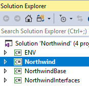
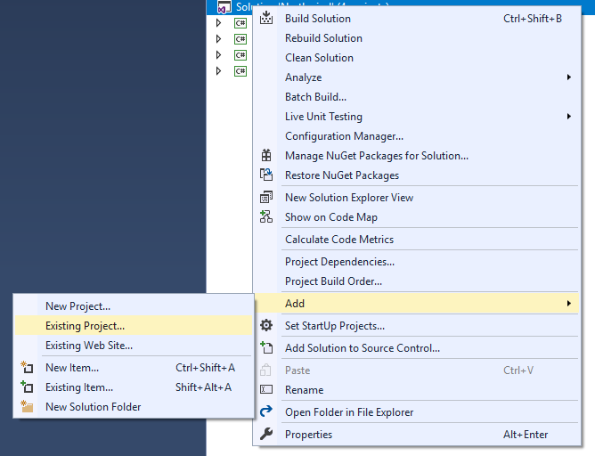

When working with the full solution (Northwind full.sln) Visual studio is loading all of your projects and this can cause a slow developer experiance.
The solution to that is working with a solution file that only contains the projects you are currently working on.
For that you can use the standard solution, called Northwind.sln, which by default contains only a few projects.
.
When you want to add an additional project, right click on the solution and choose Add\Existing Project

Choose the project folder Northwind.Orders for example and then choose the project file (.csproj file);
And you are ready to go.
You can have mutiple solutions files for the same source code - think of it as a workspace preference file. Some developers have a solution file per module - or a solution file per developer
To read more about Standard solutions VS full solutions see standard-solution-vs-full-solution.html